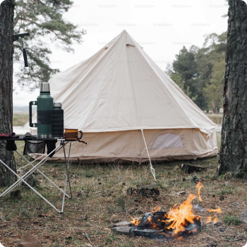

About the camp
In order to represent and protect the rights and interests
of students, the Primary Trade Union Organization.
Is a team people, united by desire. It protects the labor, social and economic rights and interests of its members and provides members and provides them with legal and social support.
It protects the labor, social and economic rights and interests of its members and provides them with legal and social support.
In order to represent and protect the rights and interests of students, the Primary Trade Union Organization of Students of Vinnytsia National Technical. In order to represent and protect the rights and interests of students, the Primary Trade Union Organization of Students of Vinnytsia National Technical. norder to represent and protect the rights.
In order to represent and protect the rights and interests of students, the Primary Trade Union Organization of Students of Vinnytsia National Technical. In order to represent and protect the rights and interests of students, the Primary Trade Union Organization of Students of Vinnytsia National Technical. norder to represent and protect the rights.
Agency is a team of people, united by team desire.

It protects the labor, social and economic rights and interests of its members and provides them with legal and social support.

In order to represent and protect the rights and interests of students, the Primary Trade Union Organization of Students of Vinnytsia National Technical. In order to represent and protect the rights and interests of students, the Primary Trade Union.
To the price